Carta Tecnica OMIRA
Data: 1935-1937 scala: 1:5000
Supporto e tecnica di riproduzione: digitale numero fogli: 17
Comparazione tra carta tecnica OMIRA del 1935 con oggi.
L’effetto “occhio di bue“ ci permette di vedere come era la città al tempo in un particolare punto.
Descrizione: cartografia realizzata col metodo aerofotogrammetrico “Nistri” dallaSoc. An. Ottico Meccanica Italiana e Rilevamenti Aerofotogrammetrici (O.M.I.R.A.) diRoma; committente è il Comune di Palermo che detiene le tavole originali a colori. L’orografia è rappresentata mediante curvedi livello (equidistanza m 5) e punti quotati. Il sistema cartesiano di riferimento è di tipo locale ed ha come origine il punto trigono-metrico di 2° ordine “La Martorana” di piazza Bellini.
Dal libro Repertorio cartografico & aerofotografico - CRICD Palermo 01/03/2010
Bibliografia:
REPERTORIO CARTOGRAFICO E AEROFOTOGRAFICO
CRicd - Centro regionale per l'iventario, la catalogazione e la documentazione dei beni culturali e ambientali.
Servizio Documentazione - Unità Operativa X - Aerofototeca
Stampa:
Priulla, Palermo 2010
Qui trovi il file pdf del libro Repertorio cartografico & aerofotografico - CRICD Palermo 01/03/2010
Quadro unione tavole al 5000
| 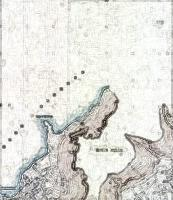 | 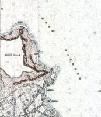 | |||
|---|---|---|---|---|
| 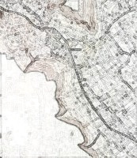 |  |
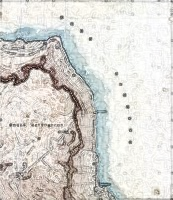 | ||
 |
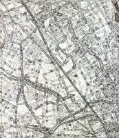 | 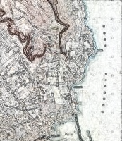 | ||
| 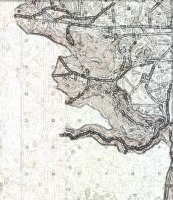 | 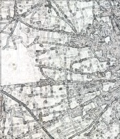 | 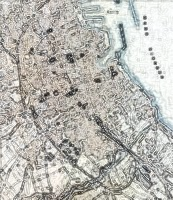 | 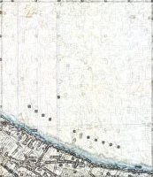 | |
 |
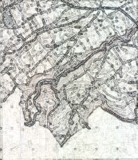 | 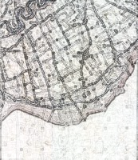 | 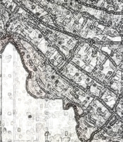 | 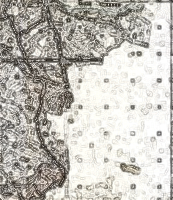 |
#OpenDataSicilia
Che cos’è
#opendatasicilia e’ una iniziativa civica che si propone di far conoscere e diffondere la cultura dell’open government e le prassi dell’open data nel nostro territorio e aprire una discussione pubblica partecipata.
Chi siamo
Siamo un gruppo di cittadini con diverse storie, competenze, professioni. Siamo accomunati dalla genuina volontà di contribuire a migliorare la qualità della vita della nostra comunità. Lo vogliamo fare con spirito di collaborazione e concretezza.
 |
Ci trovi in questi luoghi:
Informazioni
Realizzato da:
@aborruso, @piersoft, @cirospat e @gbvitrano
per Open Data Sicilia
Le cartografie storiche in dotazione al Comune di Palermo e presenti nel Portale Cartografico dalla società comunale in house per i servizi informatici SISPI SPA, sono state scansionate e georeferenziate dal Geometra Liborio Plazza del Comune di Palermo
Portale Cartografico a cura di: SISPI SPA
SiciliaHub/mappe: repo github in cui si trovano le mappa create dagli utenti della comunità OpenDataSicilia.it
Pianta della Città di Palermo e dintorni, redatta dall'Ufficio Tecnico Municipale - 19xx - scala 1:8000 - Fonte Map Warper - Uploaded by utente
Un ringraziamento particolare va a @napo che con il lavoro: mappa di Trento 1915 - da un libro di Cesare Battisti ci ha fatto riscoprire la bellezza e l'importanza delle mappa storiche.

Creative Commons Attribuzione 4.0 Internazionale - Creative Commons Attribuzione 4.0 Italia
Condividi questa mappa
Puoi condividere online la mappe con altre persone.
Condividi:


Includi la mappa
Copia e incolla questo codice in documenti HTML per incorporare questa mappa nelle tue pagine web.
Copy and paste this code into HTML documents to embed this map on web pages.